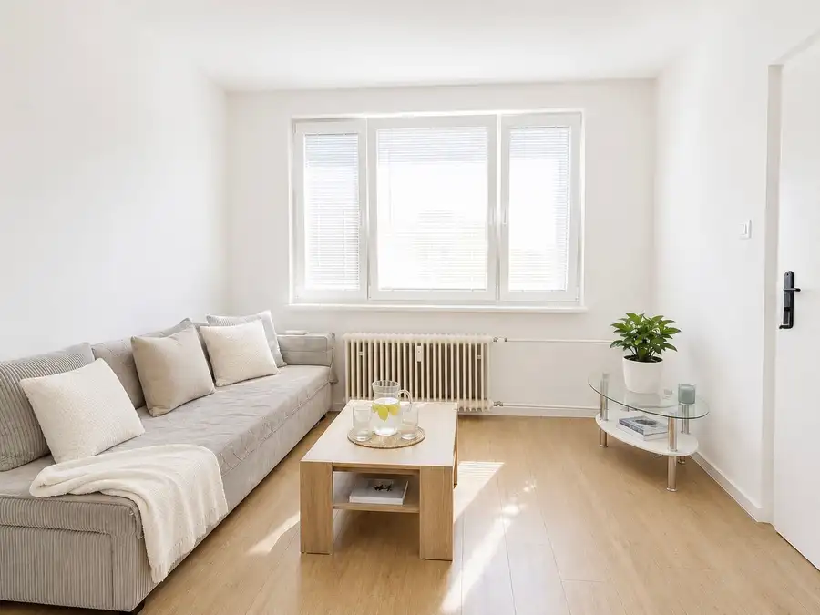
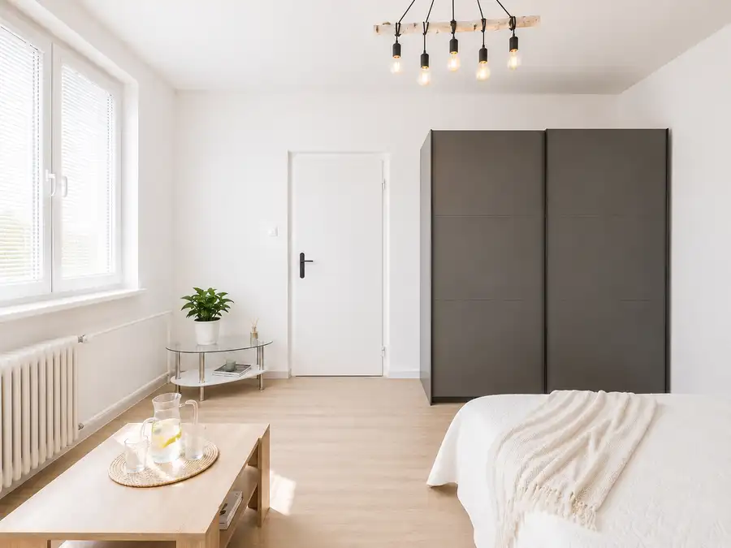
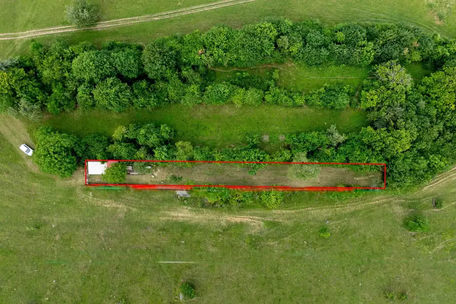
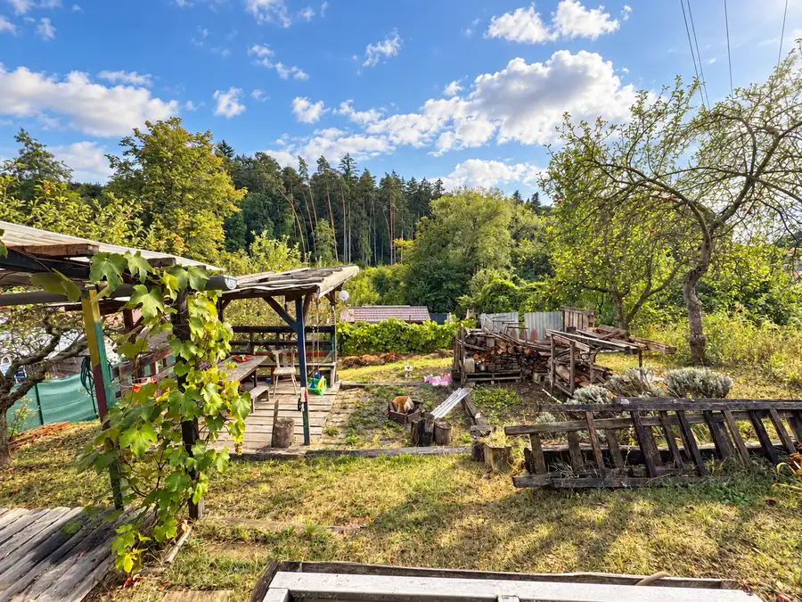
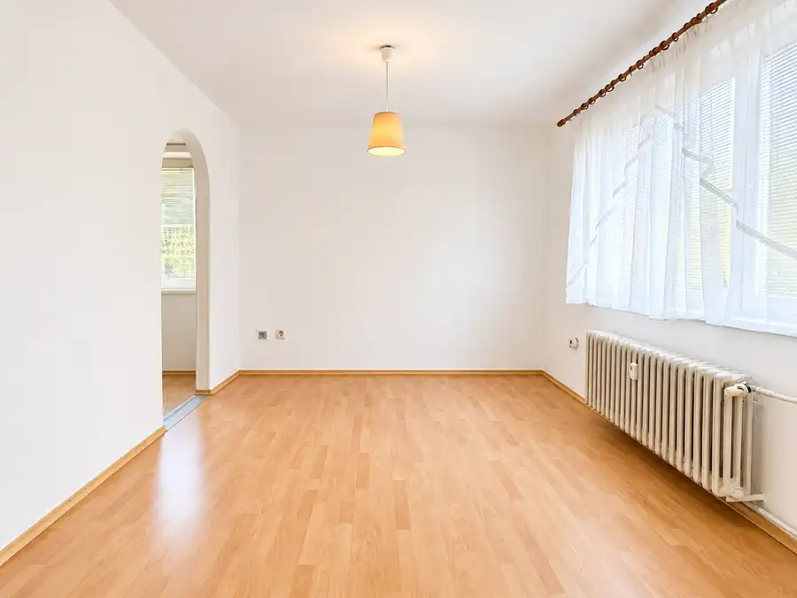

Moderný zrekonštruovaný byt na Severe, ul. Benedikta
Prievidza


- Dispozícia1-izbový
- Plocha40 m²
- Poschodie3. z 3
- StavKompletná rekonštrukcia
- VlastníctvoOsobné
- Energetická triedaB
O nehnuteľnosti
Mgr. Lea Matušková ponúka na prenájom moderný, kompletne zariadený 1-izbový byt nachádzajúci sa na ulici Benedikta vo vyhľadávanej lokalite Sídlisko Sever v Prievidzi.Byt je ideálnou voľbou pre jednotlivca alebo pár, ktorí hľadajú bývanie bez ďalších investícií. Je kompletne zariadený, po rekonštrukcii a pripravený na nasťahovanie.ZÁKLADNÉ INFORMÁCIE* Lokalita: Ulica Benedikta, Prievidza – Sídlisko Sever* 1-izbový byt* Výmera: 40 m²* 3.poschodie (bez výťahu)* Zateplený bytový dom* Pivnica* Kompletná rekonštrukcia* Kompletné zariadenie* Voľný od 01.10. 2026* Obhliadky a rezervácia sú možné už terazByt je vhodný pre jednotlivca alebo pár.DISPOZÍCIAPo vstupe do bytu sa nachádza vstupná chodba.Po pravej strane je kúpeľňa spojená s toaletou, vybavená vaňou, umývadlom, kúpeľňovým nábytkom a práčkou.Z chodby sa prechádza do kuchynskej časti, kde sa nachádza moderná kuchynská linka so spotrebičmi, chladnička s mrazničkou a praktický barový pult so stoličkami.Kuchyňa je prepojená s hlavnou obytnou miestnosťou, ktorá slúži ako obývacia izba aj spálňa. Nachádza sa tu manželská posteľ, gauč, konferenčný stolík a priestranná šatníková skriňa.Byt pôsobí moderne, svetlo a ponúka dostatok úložného priestoru.VYBAVENIEByt sa prenajíma kompletne zariadený, vrátane:* kuchynskej linky* chladničky s mrazničkou* práčky* manželskej postele* gauča* šatníkovej skrine* jedálenského/barového pultu so stoličkami* ostatného zariadenia podľa fotografiíNovému nájomcovi tak stačí priniesť si osobné veci a môže okamžite bývať.LOKALITASídlisko Sever patrí medzi obľúbené lokality v Prievidzi vďaka výbornej občianskej vybavenosti.V pešej dostupnosti sa nachádzajú:* potraviny* lekáreň* kaviareň* MHD zastávka* fitness centrum* športoviská* detské ihriská* ďalšie služby pre každodenný životParkovanie je verejné a bezproblémové, bez potreby rezidenčnej karty.CENA A PODMIENKY 420 € / mesiac vrátane energií* internet a televízia nie sú súčasťou nájmu* depozit vo výške jedného mesačného nájmu* domáce zvieratá po dohodeTento byt je ideálny pre záujemcov, ktorí hľadajú moderné bývanie v pokojnej lokalite s kompletnou občianskou vybavenosťou a možnosťou okamžitej rezervácie.V prípade záujmu o viac informácií alebo dohodnutie termínu obhliadky ma neváhajte kontaktovať.Majiteľ má právo výberu nájomníka.Mgr. Lea MatuškováZlatá brána REAL 0918 481 243 matuskova@zlatabranareal.sk______Poplatok RK: Zahŕňa kompletné sprocesovanie prenájmu, administratívne zabezpečenie, prípravu zmluvnej dokumentácie, rezervačnej dohody, koordináciu podpisov, odovzdanie nehnuteľnosti a súčinnosť počas nájomného vzťahu.
Parametre
- Bezpečnosť
- Bezpečnostné dvere
- Cena vrátane energií
- Áno
- Doprava
- MHD, Cesta
- Druh
- 1 izbový byt
- Dátum zverejnenia
- 16. 07. 2026
- Energetický certifikát budovy
- B
- Podlažie
- 3
- Počet nadzemných podlaží
- 3
- Počet pivníc
- 1
- Počet spální
- 1
- Stav nehnuteľnosti
- Kompletná rekonštrukcia
- Telekomunikácie
- Optická sieť
- Typ
- Prenájom
- Typ konštrukcie
- Tehlová
- Umiestnenie
- Ďalšie nadzemné podlažie
- Vlastníctvo
- Osobné
- Vybavenie
- Pivnica
- Vybavenie objektu
- Zariadený so spotrebičmi
- Vykurovanie
- Ústredné
- Zariadenie
- Zariadené kompletne
- Úžitková plocha
- 40 m²
Kde to je


Mohlo by Vás zaujímať

PozemokNové 12 000 €Záhrada 750 m² s chatkou | Diviaky nad Nitricou | pokoj, príroda a výhľad na les Diviaky nad Nitricou 750 m²
PozemokNové 10 000 €Záhrada 312 m² | Sad 600. ročnice, Prievidza | ovocné stromy, posedenie a potenciál chatky Prievidza 312 m²
BytNové 85 000 €3-izbový byt 55 m² v pôvodnom stave | Staré Sídlisko, Prievidza Prievidza 3-izbový55 m²4. podlažie